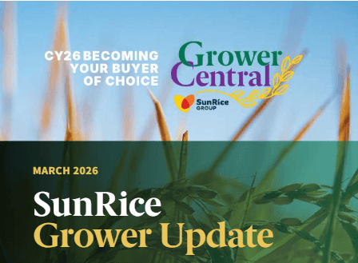
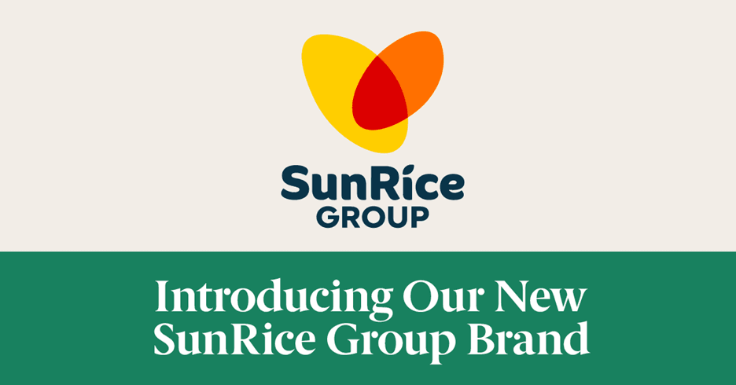
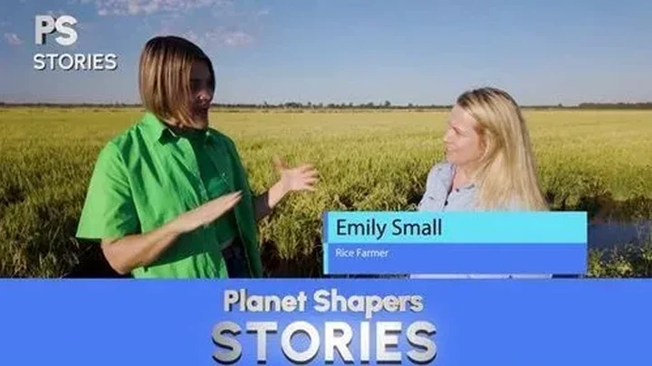
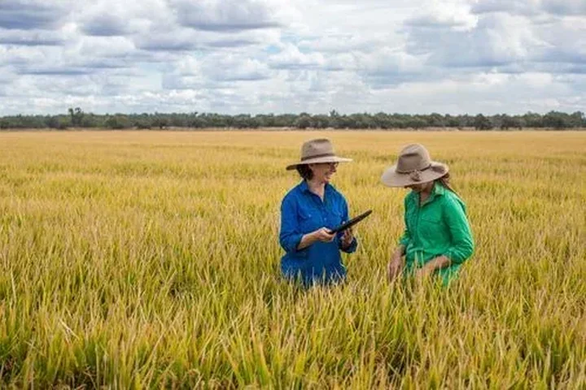
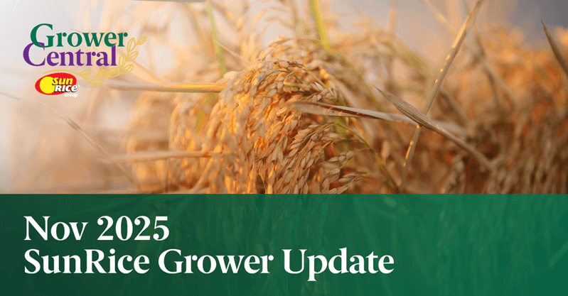
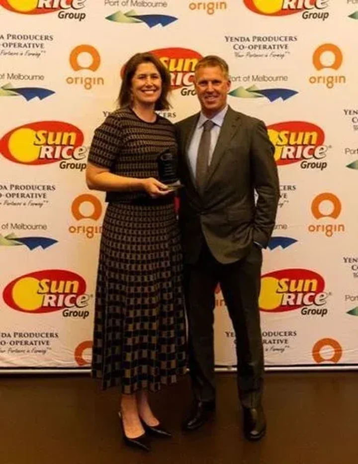
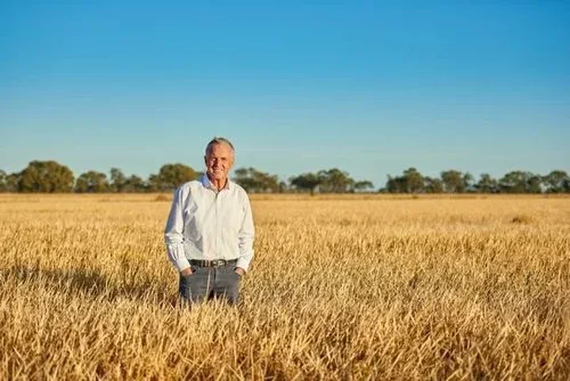
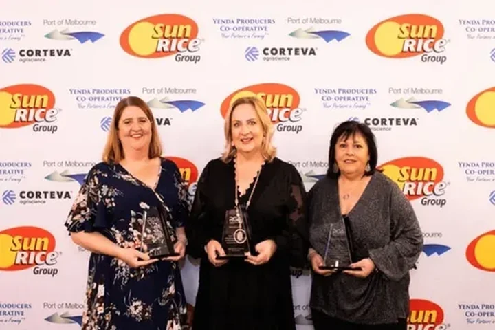
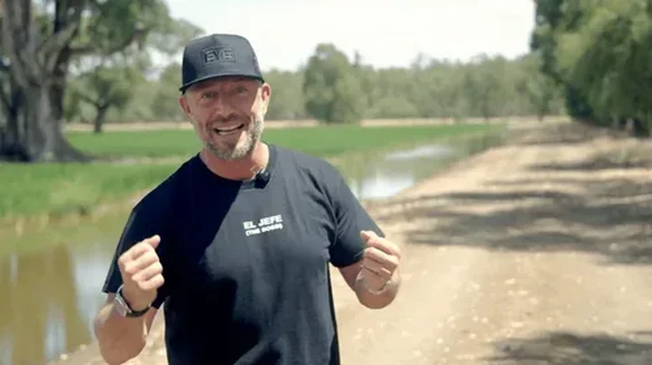

Grower Central news
From the field
Grower updates, industry news and stories from SunRice and the Riverina.


March 2026 Grower Update
The March issue covers rice quality scores, grower payments, research and global rice markets.
Read more
Introducing the new SunRice brand
SunRice Group marked 75 years and introduced its refreshed corporate identity in Griffith.
Read more
Our environmental credentials on show in Channel 10’s Planet Shapers!
It was great to see our rice industry take the spotlight on Channel 10’s Planet Shapers in October, a fantastic showcase of the people, partnerships…
Read more
$1.8 Million Secured to Support Climate-Smart Rice Farming
The grant will help rice growers adapt, innovate and stay productive.
Read moreFast 5 with one of the marketing minds taking your rice to the world - Tamara Howe
In a special edition of the Fast Five, we get to know more about the minds behind the marketing with a profile on SunRice VP, Marketing,…
Read more
Nov 2025 SunRice Grower Update
The November edition covers the SunRice Baby campaign and Riverina rice on Channel 10’s Planet Shapers.
Read more
Congratulations to our 2025 SunRice Grower of the Year, Michael and Felicia Chalmers
Rice is well and truly in the Chalmers’ blood, their family has been growing it near Moulamein for over 50 years. In the eight years they’ve been…
Read more
SunRice Group Announces AGM Outcomes and Leadership Transition
The SunRice Group has announced the successful completion of its Annual General Meeting (AGM) and B Class Meeting, held in Griffith last week, with…
Read more100 Years in the Making – An Australian Rice Conference To Remember
What an incredible few days in the Riverina, celebrating 100 years of Australian rice growing and 75 years of the SunRice Group at the Australian…
Read more
Fast 5 with Melissa Lyons - Meet the Team
We’re spotlighting members of the SunRice team with a fun Q&A, giving you an insight into the people behind the scenes. In this edition we’re…
Read more
Guzman y Gomez visits the Riverina
We were thrilled to recently host the Guzman y Gomez Mexican Kitchen (GYG) team in the Riverina, the heart of Australia’s rice-growing region, to see…
Read moreCelebrating 100 years of rice at the 2025 Australian Rice Conference
This August, the rice industry will come together in Leeton for the much-anticipated Australian Rice Conference, a standout event on the grower…
Read more
Early access to GrowRice funding announced for CY26
SunRice is pleased to announce that GrowRice funding for CY26 is now available to approved growers, three months earlier than in previous years. This…
Read more
CY26 launched along with a fresh approach to grower partnerships
SunRice has officially launched the CY26 season, with nearly 300 growers gathering in April at two ‘Riverina at our Heart’ dinners to hear what’s…
Read more